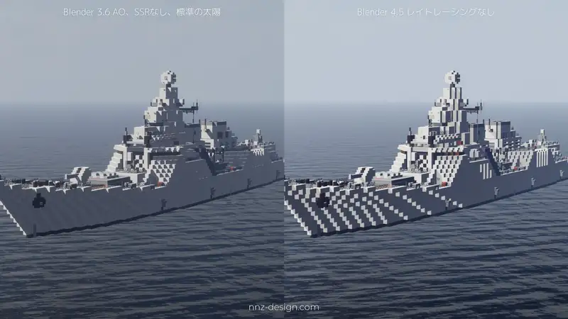
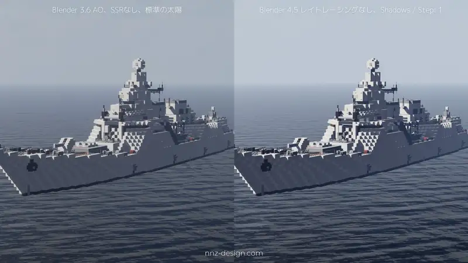
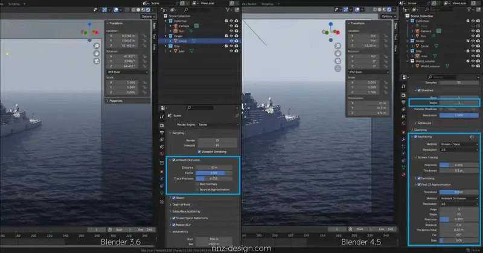
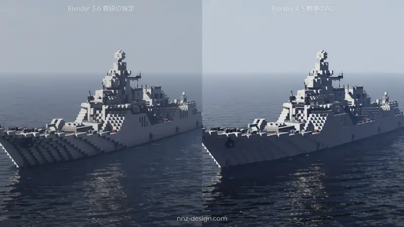
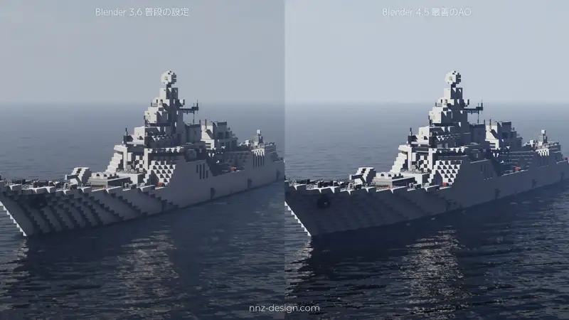
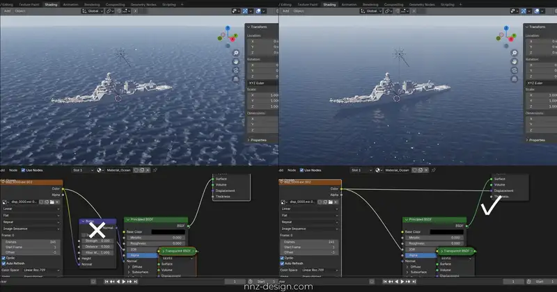

私は今まで、モデリングにも撮影にもBlender 3.6 LTSを使用してきましたが、新しいプロジェクト開始をきっかけにBlender 4.x を試して愕然としました。
影も光もメリハリなく、のっぺりとした汚い画像になったからです。今回は、Eeveeの仕様変更に伴う影響と、対策を考えました。
結論から申し上げますと、Blender 3.6 LTS の使用を継続することに決めました。永住です。
太陽の影が薄い
現状
4.xのEeveeの標準設定では、太陽から落ちる影が薄くなりました。
参考として、3.6でAOをオフにしたものと、4.5でレイトレーシングをオフにしたものを比較しました。
{kind=link}

クリックで元のサイズの画像を表示しますレイトレーシングが原因かなという印象がありましたが、関係ありませんでした。しかし、これには対処法がありました。
対策
Render Properties > Sampling > Shadows > Steps: 1と設定すると、こちら。
{kind=link}

ほとんど期待通りとなりました。
AOが薄い
現状
4.xのEeveeはAOが薄いです。
一見すると、4.xのEeveeにはAOに関する設定項目がありませんが、一応、レイトレーシング設定項目のなかに、GI（グローバルイルミネーション）との選択制でAOの項目があります。
{kind=link}

参考として、3.6での画像と、4.xのAOを標準設定で使用したものを比較しました。
{kind=link}

以前のように濃い影は出ません。続いて、Thresholdを0.5にStepsを32にするなど設定を煮詰めて可能な限り濃くしたものを比較しました。
{kind=link}

対策
色々弄りましたが、以前のように強いAOを掛けられませんでした。見た目に大きく影響しますので、これを諦めるわけには行きません。これがネックで4.xへの移住ができません。
4.xのEeveeではBiasが影の濃さに関係するようですが、最大に設定しても以前ほど濃くはなりません。
現状、最もAOを濃くできる設定は以下の通りです。
Render Properties > Raytracing > Fast GI Approximation
- Method: Ambient Occlusion
- Step: 高め (32くらい)
海洋モディファイアの読み込み方
以前のバージョンでは、海洋モディファイアで出力したexr画像をBumpノードを介してNromalに読み込ませることができましたが、Blender 4 以降は、Displacenemntとして読み込ませる必要があります。
{kind=link}
